중국에서 교육과 크리에이터 활동이 연결되는 흐름을 살펴본 뒤, 상하이에서 운영할 과정·플랫폼·공간·조직을 제안합니다. 마지막에는 매출 목표를 만드는 인원과 가격, 구체적인 계산 조건을 제시합니다.
수업→작품→채널→활동
출처: KISAS 사업 계획.
2027년 3월 개원 · 상하이 쉬후이구 차오허징 갤럭시센터(鑫耀中心)아카데미 600평 + 스튜디오·무대 300평
KISAS · 주식회사 케이노트
사진: KISAS 1기 캠프, 한국, 2026. 출처: KISAS 사업 계획, 2026년 10월.
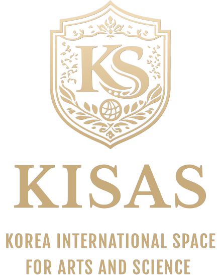
중국에서 교육과 크리에이터 활동이 연결되는 흐름을 살펴본 뒤, 상하이에서 운영할 과정·플랫폼·공간·조직을 제안합니다. 마지막에는 매출 목표를 만드는 인원과 가격, 구체적인 계산 조건을 제시합니다.
출처: KISAS 사업 계획.
2027년 3월, 상하이 쉬후이구 차오허징 갤럭시센터에 KISAS 상하이 아카데미(가칭)를 엽니다. 성인 크리에이터 과정 중심으로 취미·기업 과정과 청소년 캠프를 함께 운영할 계획입니다.
12주 작품 제작을 개인 채널·소속·방송과 무대에 연결합니다. 김형석 PD가 교육 전반을 담당하며 원밀리언 참여 형태는 협의 중입니다.
아카데미 600평 + 스튜디오·무대 300평. 3년차 연 100억원 이상이 계획 목표이며 2029년 가운데 값은 116.0억원입니다. 생태계 전체 매출로 비용·이익·회사별 귀속은 별도입니다.
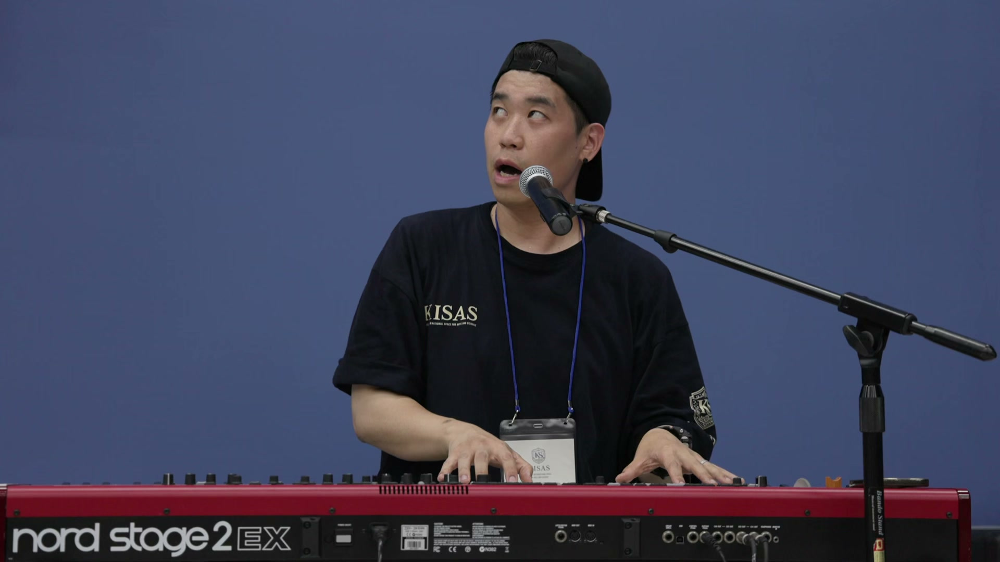
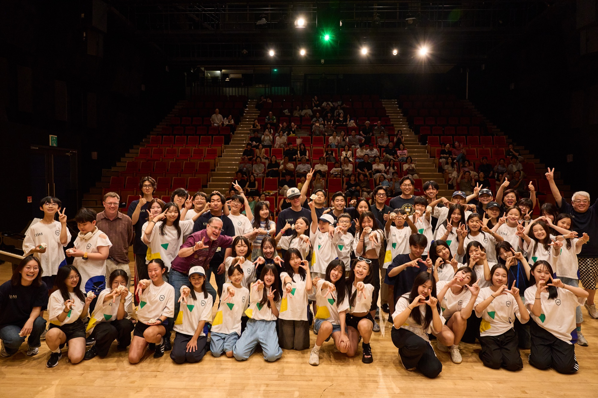
출처: KISAS 사업 계획·규모 모델, 2026년 10월.
중국 온라인 공연(라이브·숏폼) 산업의 2025년 매출은 2,213.6억 위안입니다. 더우인의 같은 해 공연류 라이브는 1.28억 회입니다. 산업 매출과 플랫폼 방송 횟수는 다른 범위입니다.
더우인의 2026년 음악 창작자는 570만 명, 음악인은 55만 명입니다. 실기·영상 제작 교육의 근거입니다.
작품과 채널을 운영하려는 성인을 모집할 계획입니다. 그룹 라이브는 2025년 150억 위안 시장으로 보도됐습니다.
출처: [1] 산업 보고서 인용 보도, [2] 더우인 보고서, [3] 음악선성, [4] 每日经济新闻.
음악 교육과 온라인 활동을 함께 이어 간 사례가 있습니다. 수강 이후의 활동을 순서대로 보면, 학원이 가르칠 내용과 외부 활동의 연결을 구체적으로 설계할 수 있습니다.
자작곡 · 음원 플랫폼
첫 전국 투어
후난위성TV 음악 프로그램
2018년 자작곡으로 음원 플랫폼에서 이름을 알리고 2019년 첫 전국 투어, 2020년 후난위성TV 음악 프로그램으로 이어졌습니다. 베이징의 전일제 사설 음악 교육기관은 그를 재학생·동문으로 소개합니다(기관 공식 소개 기준).
학원을 마친 뒤 활동을 시작하는 한 가지 순서로 설명하지 않습니다. 상하이에서는 수업과 작품 발표·성인 채널 운영을 함께 진행할 계획입니다.
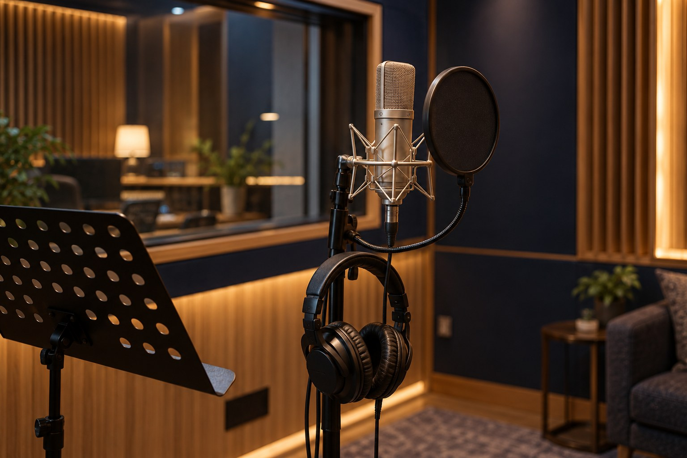
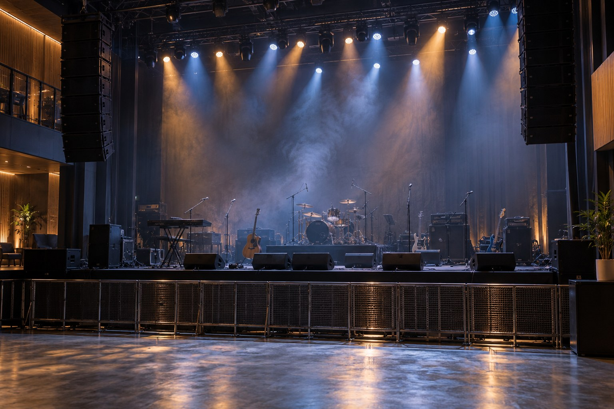
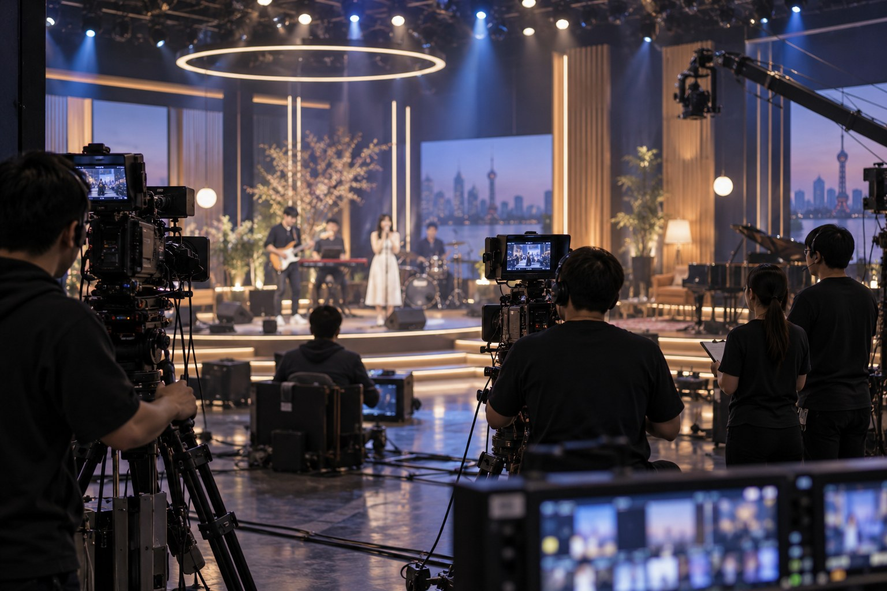
출처: [5] 북음 공식 소개·毒眸 취재. 교육기관 고리는 기관 자료 기준. 사건 연도와 기사 게재일은 구분.
사설 연기 학당과 한국식 훈련 기관을 거쳐 작품·방송 활동을 한 사례도 있습니다. 앞 쪽의 음원 플랫폼 사례와 다른 경로입니다. 상하이는 수강생이 실기와 작품·발표 기록을 갖추고 다음 활동을 준비하도록 구성할 계획입니다.
2018년 첫 신인반에 3,345명이 지원해 14명이 선발됐습니다. 1기생 장징이(张婧仪)는 2020년 드라마로 데뷔했습니다. 베이징영화학원 연기과에도 재학한 사례이며 사설 학당만의 성과로 보지 않습니다.
2020년 중국 매체는 이곳에서 훈련한 사람들이 방송 오디션을 거쳐 데뷔했다고 보도했습니다. 유료 전일반과 계약 연습생을 함께 운영한 기관이며 개인별 유료 수강 여부는 다릅니다.
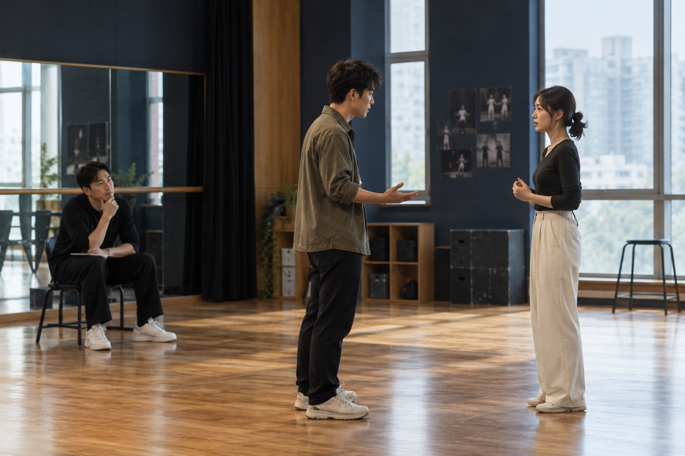
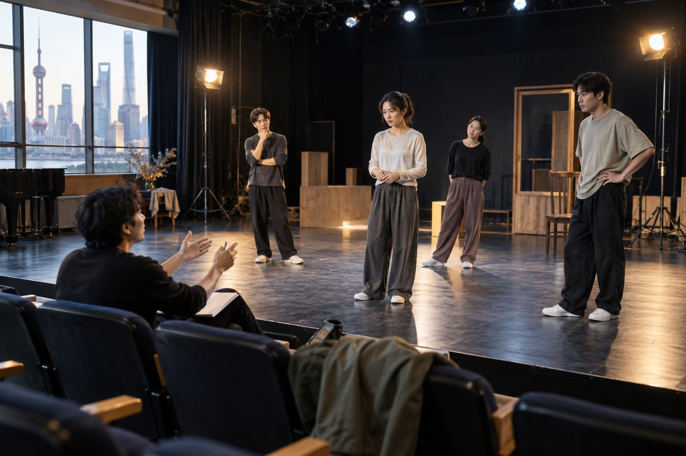
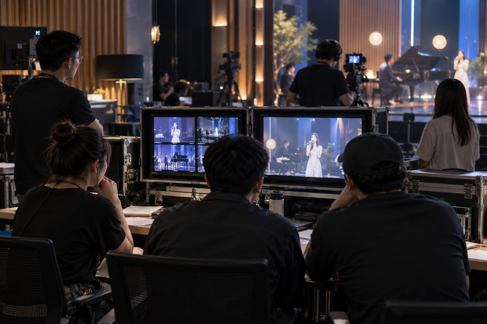
출처: [7] 산샤학당 보도·新京报, [8] 红星新闻. 기관별 경로는 사례이며 KISAS 운영은 계획.
같은 음악과 안무도 콘텐츠 형식에 따라 필요한 표현과 제작 방식이 달라집니다. 상하이 과정은 곡을 완성한 뒤 커버 영상·댄스 영상·라이브·짧은 이야기 영상으로 활용하도록 설계합니다. 유행하는 형식을 따라 해 보고, 자기 작품에 맞게 고치는 과정을 수업에 넣습니다.
음악선성은 원곡이 커버·영상 창작을 통해 확산한 사례를 소개합니다. 수강생은 후렴과 가사의 전달력을 점검하고, 다른 창작자가 참여할 수 있는 버전을 준비합니다.
동선·표정·클로즈업·진행을 함께 연습합니다. 무대 안무를 세로 화면에 맞게 다시 구성하는 실습입니다.
짧은 장면의 연기와 음악, 편집을 함께 다룹니다. 출연자·작곡자·편집자 역할을 나누어 한 작품을 제작합니다.
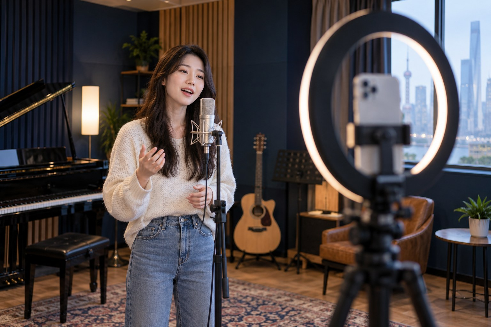
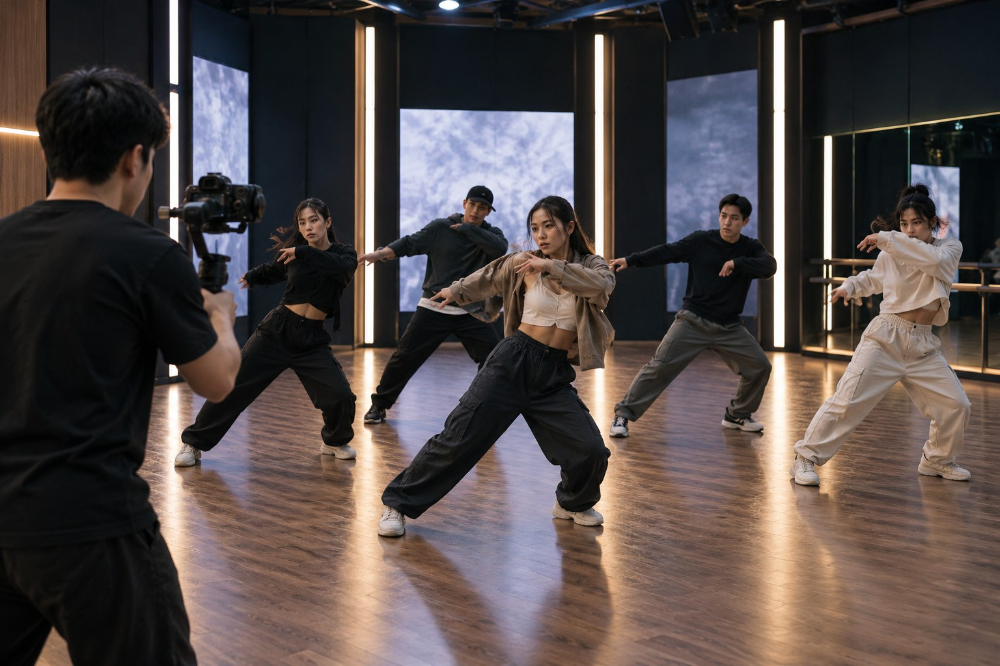
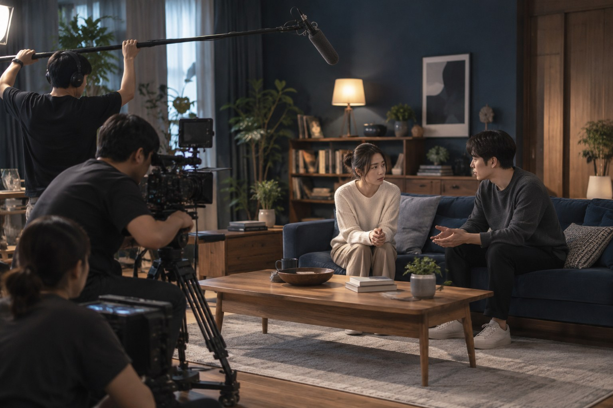
출처: [3] 음악선성, [9] 光明日报. 과정 구성은 계획.
실기 교육에 제작과 운영을 더해야 활동을 지속할 수 있습니다. 상하이 과정은 처음 배우는 사람이 반복해서 작품을 내놓고, 소속 제안이나 제작 의뢰를 판단하도록 다음 내용을 한 과정에 넣습니다.
노래·춤·연기를 촬영해 보고, 소리와 표정·동선을 고칩니다.
기획·촬영·편집·게시를 수업 과제로 연결해 제작 습관을 만듭니다.
본인 계정의 운영 권한, 작품 사용 범위, 업무 내용을 읽고 확인하는 연습을 합니다.
제작비·출연료·판매 거래액을 구분하고, 실제 의뢰의 작업 범위를 정리합니다.
쇼케이스 영상과 작품 소개서를 묶어 제작사·브랜드에 보여 줍니다.
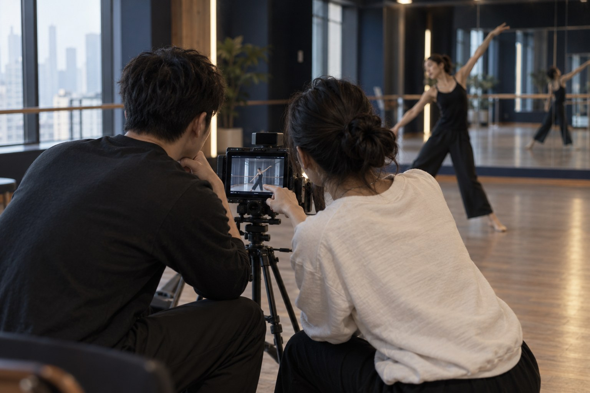
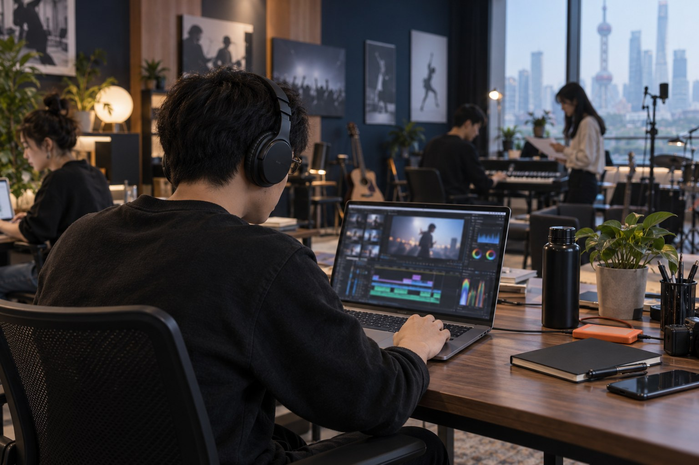
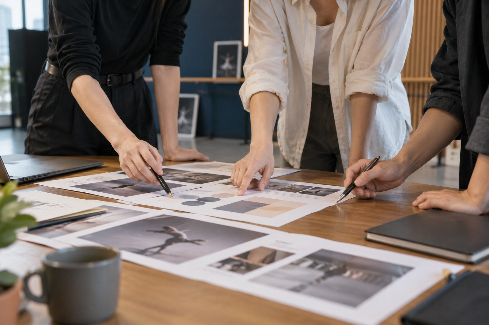
출처: [10] 新榜, [9] 화면 표현 사례. 교육·활동 지원은 계획.
상하이에는 취미 수업부터 전문 창작 과정까지 서로 다른 가격의 상품이 있습니다. KISAS는 성인 취미반과 크리에이터 본 과정을 구분하고, 본 과정에는 소수반 지도·제작·채널 운영·쇼케이스를 포함할 계획입니다. 과정의 가치와 수업 시간이 가격에 함께 제시돼야 합니다.
| 비교 상품 | 공개 가격 | 시점 |
|---|---|---|
| 상하이 시민 예술 야간학교 | 12회 500위안 | 2024 |
| 일반 댄스 단체 수업 | 회당 약 150위안 | 2026 |
| 上戏 카메라 앞 연기 | 80교시 16,800위안·15명 | 2026 |
| 上戏 전일제 영상 연기 | 한 학기 17,500위안 | 2026 |
| 上戏 숏드라마 배우 | 한 학기 22,800위안 | 2025 |
기관·수업 시간·정원·피드백·제작 범위가 다릅니다. 다른 기관의 가격을 그대로 확정 수강료로 사용하지 않습니다.
등록 전에 과목·시간표·작품·피드백·포함 비용을 공개하고, 시즌 단위로 모집합니다. 최종 수강료와 정원은 개원 준비에서 정합니다.
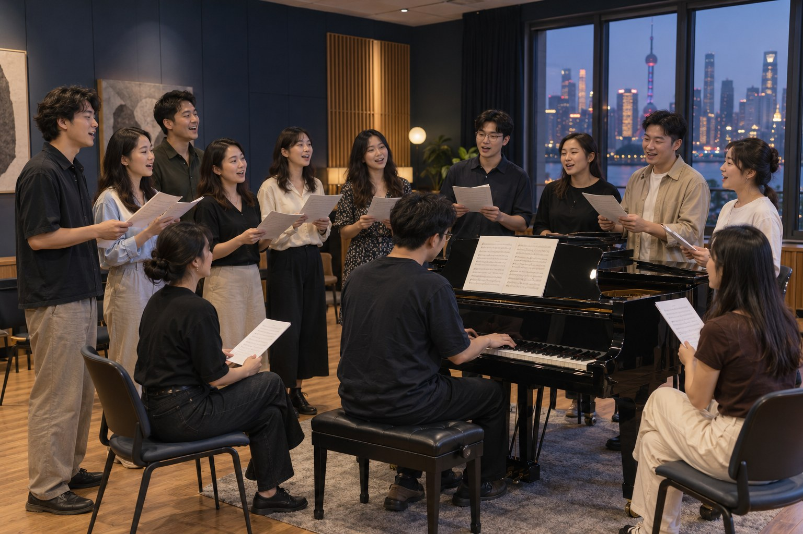
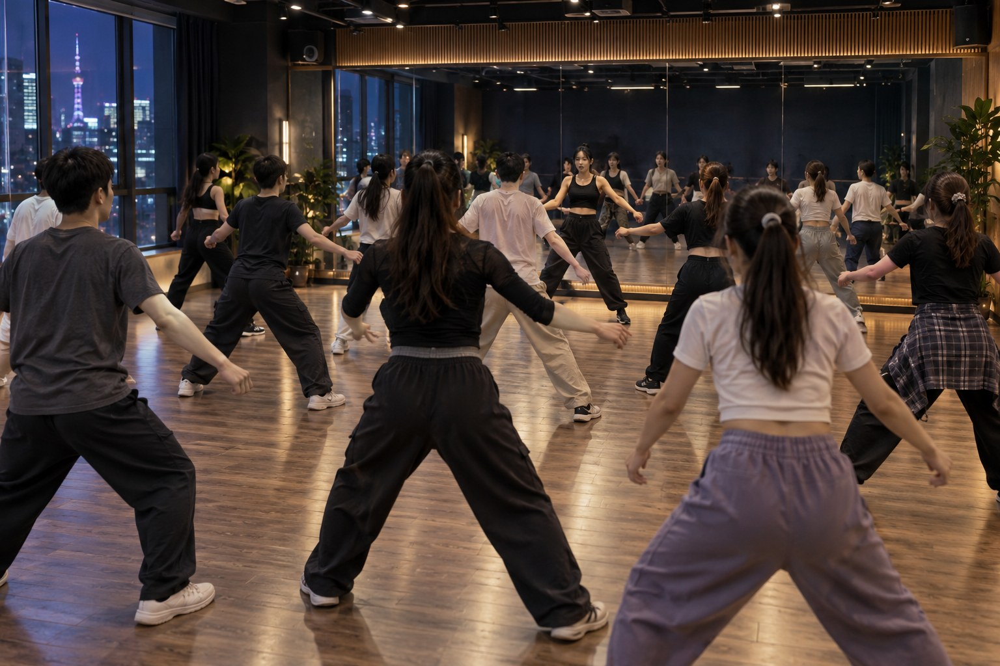
출처: [11] 야간학교, [12] 上观新闻, [13] 上戏 공식 요강. KISAS 가격은 미정.
첫 고객은 배우는 목적과 가능한 시간을 기준으로 나눕니다. 자기 채널과 작품을 만들려는 성인은 본 과정으로, 즐기며 배우려는 성인은 취미반으로 안내합니다. 청소년과 가족에게는 방학 중 팀 창작과 발표 경험을 제안합니다.
한 대형 소속사와 대학의 2026년 공동 보고서에서는 등록 방송인의 74.8%가 겸업이라고 밝혔습니다. 이 표본을 참고해 주말·저녁 트랙을 기본으로 두고, 집중 제작을 원하는 사람에게 전일 트랙을 제공합니다.
2025년 상하이 시민 예술 야간학교 접수에는 94.58만 명이 동시에 접속했습니다. 취미 수요를 본 과정 구매로 단정하지 않고, 공개 수업 뒤 목적별 상담으로 연결합니다.
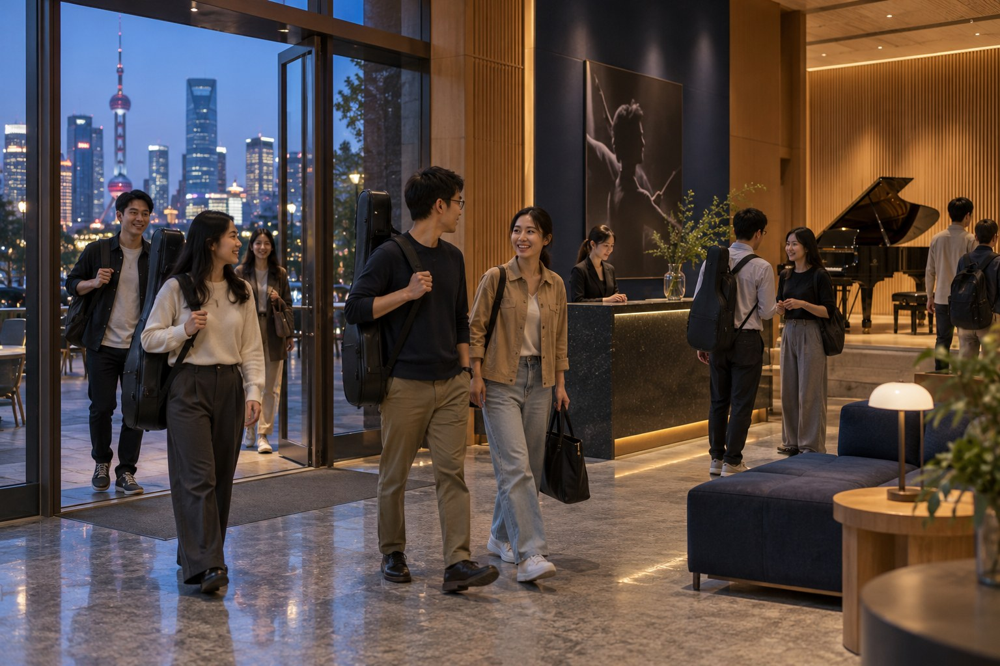
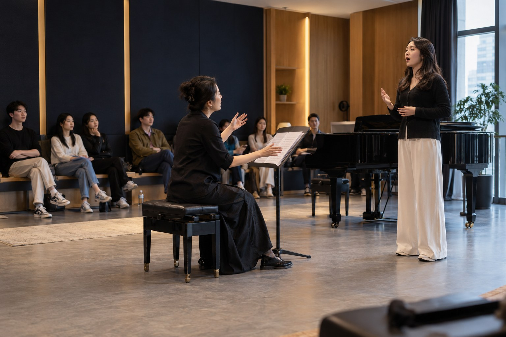
출처: [14] 공동 보고서 인용, [15] 야간학교 접수, [13] 上戏 요강.
아카데미형 엔터테인먼트는 교육으로 만든 작품을 관객·제작사·브랜드에 연결하는 사업입니다. 다음 업무를 이어 갈 계획입니다.
보컬·댄스·작곡·제작을 가르치고 12주마다 작품을 완성합니다.
작품·협업 수요를 연결하고 게시·확산·분석을 지원합니다.
성인 수료생의 소속·제작·브랜드 협업을 연결합니다.
수업 등록과 소속 선택은 별도입니다. 교육과 제작 지원을 안내하며 인기·소득·데뷔를 보장하지 않습니다.
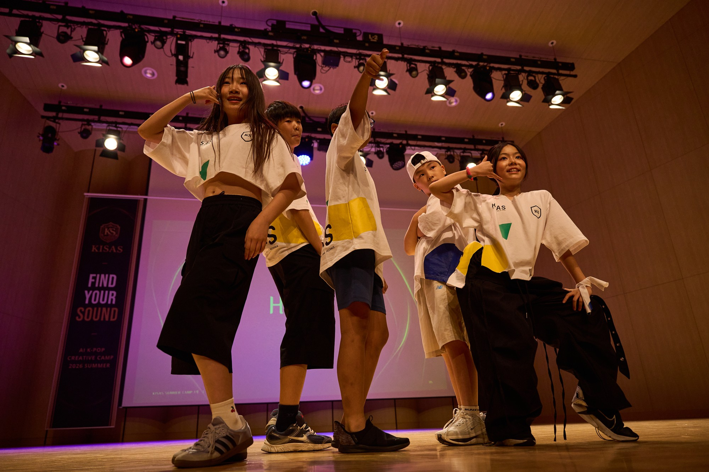
출처: KISAS 사업 계획. 개념은 김형석 PD의 2026년 4월 구상을 바탕으로 한 운영 계획.
네 단계는 모든 학생이 같은 속도로 통과하는 등급이 아닙니다. 성인 수강생은 처음부터 작품과 채널을 함께 만들고, 수료 뒤 목표와 준비 상태에 따라 활동을 선택합니다. 교육팀과 활동 지원팀은 다음 단계에 필요한 자료를 넘깁니다.
현재 수준을 진단하고 기본기를 훈련합니다. 노래·안무·곡·영상 중 시즌의 중심 작품을 정해 완성합니다.
완성 과정을 콘텐츠로 기획하고 본인 채널에 게시합니다. 시청 반응과 제작 기록을 함께 읽어 다음 작품을 고칩니다.
작품 소개서와 활동 기록으로 제작·출연·협업 제안을 검토합니다. 담당자·업무·일정·정산 내용을 확인합니다.
쇼케이스에서 실제 공연과 촬영을 경험합니다. 외부 출연을 준비하는 사람은 지원 자료와 리허설을 갖춥니다.
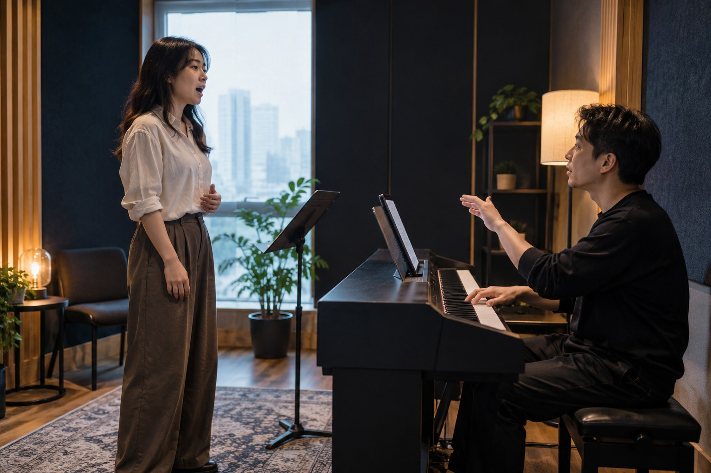
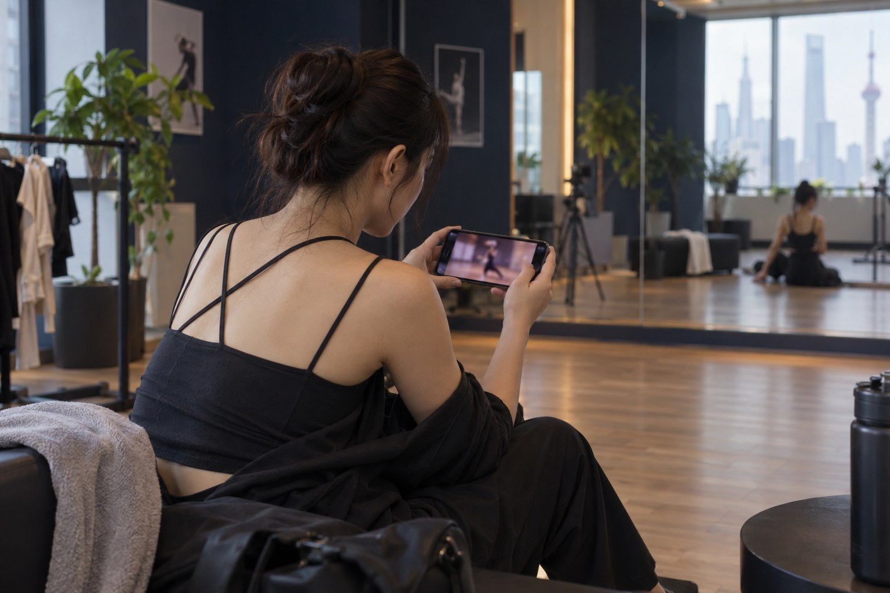
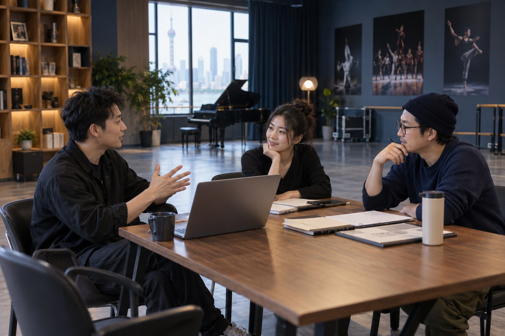
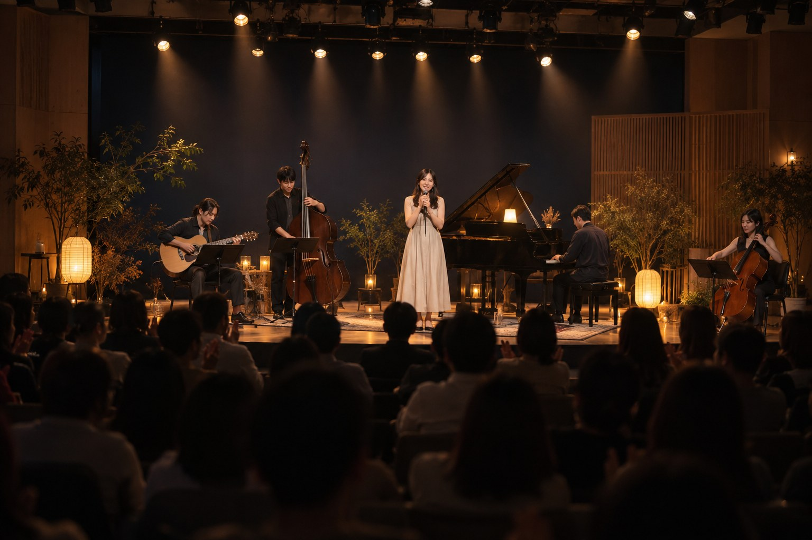
출처: KISAS 과정·활동 지원 계획.
KISAS는 수강생의 작품 하나를 보컬·안무·작곡·촬영 강사가 함께 지도합니다. 과목에서 배운 내용을 게시와 발표에 필요한 제작으로 연결합니다. 단계마다 다른 목적의 과제를 내는 대신 같은 작품을 각 수업에서 발전시킵니다.
작곡에서 만든 곡을 보컬에서 녹음하고, 댄스에서 동선을 구성합니다. 촬영·편집 수업은 이를 콘텐츠로 완성합니다.
한국 마스터의 방문 수업과 현지 강사의 주간 수업을 연결합니다. 교재·평가 기준·수업 관찰로 교육 품질을 관리할 계획입니다.
채널 운영·콘텐츠 제작·브랜드 협업·한국 오디션과 연수의 선택지를 제공합니다. 활동 지원은 작품과 준비 상태에 맞춰 진행합니다.
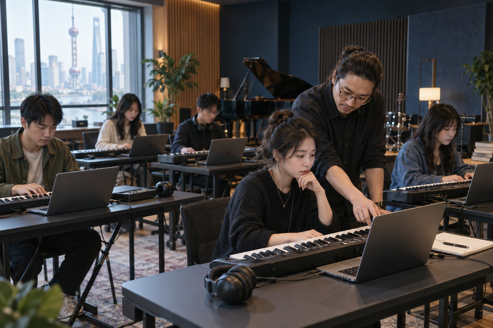
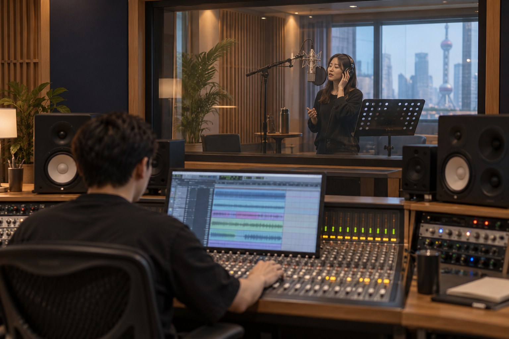
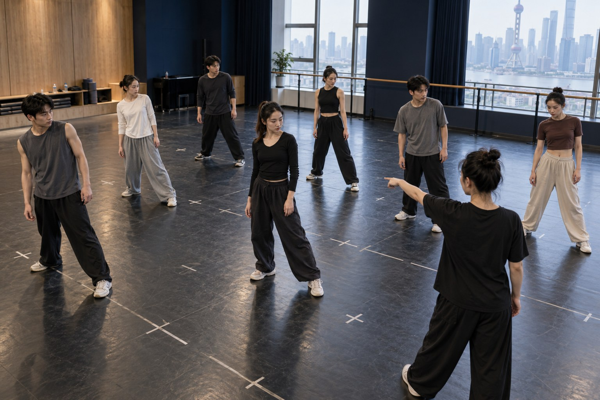
출처: [16] EXPG 공식 사이트·Real Sound. KISAS 구성은 계획.
성인 크리에이터 중심으로 취미·기업·청소년 캠프를 운영할 계획입니다.
작품과 자기 채널, 제작 활동을 준비합니다. 주말·저녁과 전일 트랙 모두 12주 작품 제작이 중심입니다.
노래·춤·자기 이야기로 곡 만들기를 경험합니다. 기업에는 팀 창작 워크숍을 제안합니다.
방학에 팀 창작·녹음·안무·발표를 경험합니다. 성인의 수익 활동과 구분합니다. 과정별 가격·정원은 개원 준비에서 정합니다.
출처: KISAS 사업 계획·규모 모델.
한 시즌의 목표는 작품을 완성하고 발표하는 것입니다. 기본기 수업과 제작 실습을 매주 함께 진행하며, 뒤 주차에서 확인한 문제는 앞 과목의 피드백으로 되돌립니다. 아래 진행은 성인 크리에이터 과정의 계획입니다.
| 주차 | 수업·실습 | 남길 기록 |
|---|---|---|
| 1 | 수준·목표 진단, 작품과 채널 확인 | 시작 영상·목표 |
| 2 | 보컬·리듬·움직임 기본, 주제 탐색 | 기초 연습 |
| 3 | 곡·영상의 기획, 팀 역할 배정 | 기획안·역할 |
| 4 | 가사·멜로디·안무 초안 | 작품 초안 |
| 5 | 데모·장면 시험 촬영 | 시험 버전 |
| 6 | 강사 합동 검토와 수정 | 피드백·수정본 |
| 7 | 본 녹음·안무 리허설 | 녹음·연습 영상 |
| 8 | 본 촬영·편집 | 작품 영상 |
| 9 | 게시본·소개 글 제작 | 게시 자료 |
| 10 | 게시·성인 라이브 실습 | 활동 기록 |
| 11 | 반응 검토·무대 리허설 | 수정본·공연 준비 |
| 12 | 쇼케이스·작품 발표·개별 상담 | 완성 작품·다음 계획 |
수업 시간과 과목 비중은 두 트랙의 시간표에 맞춰 정합니다. 작품 종류에 따라 녹음과 촬영 순서는 조정합니다.
출처: KISAS 교육과정 계획.
KISAS는 자기 생각을 작품으로 표현하는 수업을 진행합니다. 질문과 대화에서 주제를 찾고, 가사·작곡·녹음·안무를 거쳐 발표합니다. 강사는 설명과 시범을 제공하고, 학생이 만든 초안을 함께 고칩니다.
누구에게 어떤 이야기를 전할지 정합니다. 선택한 주제는 곡과 영상, 무대 표현의 기준으로 사용합니다.
첫 초안과 피드백, 완성본을 함께 남깁니다. 상하이에서는 이 방식을 성인의 12주 과정에 적용할 계획입니다.
출처: KISAS 1기 교육 기록·상하이 과정 계획.
2026년 여름 중앙대학교에서 9박 10일간 KISAS 1기 캠프를 운영했습니다. 초4~중3 참가자 34명과 주니어리더 2명이 참여했고 전원 이수했습니다. 팀 창작곡 6곡, 개인곡 2곡과 무대 15개를 완성했습니다.
학생이 가사·곡을 만들고 녹음·안무·발표를 경험했습니다. 수업·제작의 기록입니다.
교재·지도 순서를 성인 12주 과정에 맞춥니다. 1기는 청소년 실적이며 성인 효과·재등록은 개원 뒤 확인합니다.
출처: KISAS 1기 캠프 기록, 2026. 이수·인원·작품은 KISAS 제공 실적.
보컬은 기본 발성과 곡의 해석을 녹음·공연에 연결하는 수업입니다. 학생의 첫 녹음과 수정 녹음을 비교하며 표현을 고칩니다.
호흡·발음·리듬·음정을 익히고 목소리에 맞는 곡을 연습합니다.
마이크 사용·테이크 선택을 배우고 작곡 수업의 데모를 녹음합니다. 커버·자작곡 영상과 라이브 무대를 준비할 계획입니다.
출처: [13] 上戏 대중가창 요강. KISAS 보컬 과정은 계획.
댄스에는 원밀리언(1MILLION)이 참여합니다. 강사·횟수·지도 방식은 협의 중입니다. 주간 수업은 현지 강사가 맡고 방문 지도를 시즌 작품과 연결할 계획입니다.
리듬·몸의 조절·안무 습득·팀 동선을 배우고 자기 곡에 맞는 움직임을 구성합니다.
전체 안무와 세로형 클로즈업을 비교해 시선·표정·동선을 고칩니다. 음악·촬영 강사와 공연 버전과 게시본을 함께 준비합니다.
출처: KISAS 사업 계획, 원밀리언 참여 형태 협의 중.
작곡·프로듀싱은 멜로디를 실제로 부르고 공개할 곡으로 완성하는 과정입니다. 김형석 PD가 교육 전반을 담당하며 상주 강사가 제작을 지도합니다.
가사의 이야기·후렴·멜로디·리듬을 만들고 분위기와 곡의 구조를 검토합니다.
편곡·보컬 녹음·수정 의견 전달을 배웁니다. 음원·가사·참여자 기록을 정리하고 숏폼 구간과 공연 버전을 준비할 계획입니다. 보컬·댄스·영상 수업이 같은 데모를 활용합니다.
출처: [3] 음악선성의 곡 확산 사례. 교육 구성은 KISAS 계획.
학생이 작품을 소개하고 반복해서 게시하도록 기획·촬영·편집을 연결합니다. 스마트폰 제작부터 시작하고 필요한 경우 학원 스튜디오를 활용할 계획입니다.
주제·첫 장면·대사를 정하고 노래·댄스·짧은 이야기 영상을 시험 촬영합니다. 표정·시선·소리를 확인합니다.
구도·조명·장면 연결을 익혀 게시본을 완성합니다. 역할을 바꾸어 출연과 제작을 경험하고, 작품·소개·제작 과정의 영상으로 나누어 편집합니다.
출처: [17] 상하이개방대 모집 자료. KISAS 실습은 계획.
성인 과정은 본인 계정으로 게시하고 운영 기록을 남기는 수업입니다. 채널 성장보다 제작의 지속성과 수정 과정을 평가할 계획입니다.
음악·춤·이야기의 범위와 게시 순서를 정합니다. 시청 지속·댓글·저장·다음 콘텐츠 요청을 보고 게시본을 고칩니다.
성인이 진행·공연·카메라·음향을 나누어 리허설과 시험 촬영을 합니다. 방송 뒤 진행 기록을 검토합니다. 청소년 캠프는 작품과 발표 중심으로 구분합니다.
출처: KISAS 성인 과정 계획. 반복 제작 참고: [10] 新榜.
AI 트랙은 생성 결과를 선택·수정해 작품으로 완성하는 교육 계획입니다. 학생이 주제·음악·장면을 정해 보컬·안무·촬영과 연결합니다.
가사·멜로디·편곡 초안을 비교하고 사람의 녹음과 실제 촬영을 더합니다.
장면의 감정·길이·전환에 맞춰 음악을 만들고 수정 기록을 정리합니다.
출처: [13] 上戏 AI 음악 요강, [18] AI 숏드라마 요강. KISAS 트랙은 계획.
김형석 PD는 프로그램·학생 모집·교육 운영·교수진·교재를 담당합니다. 방문 수업과 작품 검토를 상주 강사의 주간 지도에 연결할 계획입니다.
기획·데모·발표 준비 단계에 맞춰 수정 방향을 제시하고 상주 강사가 완성을 지도합니다. 방문 일정·횟수는 별도로 정합니다.
곡의 기획부터 제작까지 경험하는 상품입니다. 기간·대상·발표 방식을 본 과정과 연결해 정할 계획입니다.
출처: KISAS 사업 계획. 방문 일정과 작곡 캠프 세부 구성은 계획.
상하이의 매주 수업은 현지 상주 강사가 맡고, 한국 마스터는 방문 수업과 작품 지도에 참여할 계획입니다. 수업 자료와 평가 기준을 공유해 방문 수업의 피드백이 다음 주 수업에 반영되도록 운영합니다.
과목별 실기와 작품 지도 경험을 확인합니다. KISAS 교재로 시범 수업을 진행하고, 학생 초안에 피드백을 주는 방식을 함께 맞춥니다.
현지 교육 책임자가 수업 기록을 확인합니다. 강사는 제작 중인 작품을 함께 검토하고, 필요한 경우 보컬·안무·촬영 과제를 조정합니다.
시작 영상·중간 작품·완성본을 비교합니다. 기본기·제작 참여·수정 반영·발표를 평가하고, 12주차 쇼케이스 뒤 다음 시즌과 활동 방향을 상담합니다.
출처: [16] EXPG. KISAS 강사·평가 체계는 계획.
성인 수강생은 수업 자료를 자기 채널의 콘텐츠로 활용합니다. 교육팀의 작품 지도와 채널 지원팀의 게시 기획을 같은 일정으로 연결할 계획입니다.
연습·제작·완성본 중 보여 줄 내용을 학생이 정합니다. 팀 작품의 참여자와 음원·영상 사용 범위도 정리합니다.
학생이 게시본·반응·제작 시간을 제출합니다. 교육팀은 과제 난이도와 제작량을, 채널 지원팀은 콘텐츠 형식을 검토합니다. 게시 계획은 개인 수준·시간에 맞춥니다.
출처: KISAS 성인 과정·채널 운영 계획.
크리에이터 클럽 차이나(가칭, 계획)는 작품과 사람을 연결하는 플랫폼입니다. 외부 영상과 라이브는 더우인 등 기존 플랫폼에서 발표하고, 클럽에서는 참여자의 작품·역할·협업 수요를 확인하도록 구성할 계획입니다.
학생이 완성한 음원·영상·공연 기록과 맡은 역할을 정리합니다. 외부 채널의 작품 링크를 함께 제시해 제작 능력을 확인하게 합니다.
보컬·안무·작곡·촬영·편집이 필요한 프로젝트를 연결합니다. 참여자는 목표·작업 범위·일정을 확인하고 함께 제작합니다.
졸업생에게 작품 발표와 협업 소식을 제공하고, 강사와 제작팀이 필요한 사람을 찾을 수 있도록 합니다. 이용 범위와 운영 방식은 개원 준비에서 정합니다.
출처: KISAS 플랫폼 계획·규모 모델.
바이럴 마케팅 팀은 작품이 어떤 형식과 순서로 관객에게 전달될지 설계합니다. 학생의 개인 채널과 학원 공식 채널을 함께 운영하되, 교육용 피드백과 학원 홍보의 목적을 구분합니다. 제작 중간부터 참여해 완성 뒤에도 사용할 자료를 확보할 계획입니다.
원곡·커버·안무·제작 과정의 활용 방식을 정합니다. 촬영 전에 소개 장면과 짧은 편집본에 필요한 내용을 준비합니다.
재학생·졸업생의 협업과 외부 창작자의 참여를 연결합니다. 작품의 주제와 관객에 맞는 채널·협업 상대를 검토합니다.
반응이 좋았던 장면과 실제 상담·프로젝트 문의로 이어진 내용을 확인합니다. 조회 수와 모집 결과를 구분해 기록하고 다음 시즌에 반영합니다.
출처: [3] 음악선성. 팀 업무와 운영 방식은 계획.
매니지먼트는 작품과 활동 이력을 가진 성인 수료생의 다음 일을 지원합니다. 교육 등록과 소속 계약을 별도로 두고, 학생의 목표와 실제 제안을 비교해 선택하도록 돕습니다. 제휴 상대와 자체 운영의 범위는 준비 과정에서 정할 계획입니다.
작품·발표 영상·개인 채널·업무 수행 기록을 검토합니다. 출연과 제작 중 어떤 활동을 원하는지 확인해 소개 자료를 구성합니다.
제작사·브랜드·운영팀에 자료를 제시합니다. 제안의 역할·시간·보수·작품 사용 범위를 확인하고 본인이 선택합니다.
공연과 촬영의 준비·진행·정산 기록을 검토합니다. 활동에서 드러난 교육 수요는 다음 시즌의 실기·제작 지도에 반영합니다.
출처: [19] 界面新闻. KISAS 매니지먼트 지원은 계획.
수료생의 활동은 공연과 출연뿐 아니라 곡·영상 제작, 브랜드 협업으로 이어질 수 있습니다. 사업팀은 의뢰의 목적에 맞는 팀을 구성하고, 교육팀은 필요한 실기와 제작을 지원할 계획입니다. 커머스는 성인 활동의 성과에 따라 별도 운영합니다.
사업팀이 요구 사항·일정·수정 범위를 정리합니다. 작곡·보컬·영상 팀은 결과물을 제작하고 참여자와 정산 내용을 기록합니다.
작품의 관객과 브랜드의 목적이 맞는 프로젝트를 검토합니다. 협업 건수·작업 범위·지급액을 기록해 반복할 상품을 개발합니다.
팀 운영과 상품 소개를 각각 준비합니다. 후원·판매 거래액 전체와 운영 측 매출을 구분하고, 인력·제작·홍보 비용까지 확인합니다.
출처: KISAS 활동 지원 계획·규모 모델.
학생은 시즌이 끝나면 자기 작품과 발표 기록을 바탕으로 다음 활동을 고릅니다. 한 사람에게 출연·제작·사업을 모두 요구하지 않고, 목표와 역량에 맞는 연결을 제공합니다. 다음 시즌의 교육과 외부 활동을 함께 선택할 수도 있습니다.
자기 주제로 영상과 음악을 계속 발표합니다. 수업에서 익힌 제작 계획과 반응 분석을 활용합니다.
작곡·안무·촬영·편집 담당으로 팀에 참여합니다. 작품별 역할과 수행 경험을 소개 자료에 쌓습니다.
작품과 관객에 맞는 제작·출연 제안을 검토합니다. 요청 내용과 일정에 맞춰 결과물을 제공합니다.
대상 조건에 맞는 학생에게 공개 오디션 정보와 준비 과정을 안내합니다. 연수는 상하이의 작품 제작 이후 한국의 녹음·안무·무대 경험으로 연결합니다.
출처: KISAS 과정·활동 지원 계획. 연수·오디션 연결은 계획.
갤럭시센터의 600평 아카데미는 수업과 제작 실습에 사용합니다. 교실·방별 면적은 과정과 시간표·장비를 정한 뒤 배치할 계획입니다.
보컬·작곡·댄스·카메라 표현 수업과 팀 실습·개별 피드백을 진행합니다.
데모와 보컬을 녹음하고 안무·화면 표현을 촬영해 검토합니다.
팀 토론·작품 검토·상담·준비 공간을 둡니다. 방음과 움직임·촬영의 필요를 반영하고 수업·연습 예약을 함께 관리합니다.
출처: KISAS 공간 계획. 아카데미 총면적 600평.
추가 300평은 촬영과 쇼케이스를 위한 공간으로 계획합니다. 학생이 수업에서 만든 음악과 안무를 실제 영상과 공연으로 완성하는 곳입니다. 시즌 발표 외에도 공개 수업·작품 촬영·협업 행사를 운영할 계획입니다.
작품 영상과 소개 영상, 성인 라이브 실습을 준비합니다. 수업·제작·행사 촬영이 사용할 장비와 예약 시간을 함께 관리합니다.
학생의 작품을 공연하고 촬영합니다. 교육팀은 무대 준비와 평가를, 제작팀은 음향·촬영·발표 영상을 맡도록 구성합니다.
제작사·브랜드 담당자를 초청해 작품을 소개합니다. 학생 수업에 필요한 시간을 확보한 뒤 외부 대관 가능 범위를 정합니다.
출처: KISAS 공간 계획·규모 모델. 추가 공간 총면적 300평.
사업 장소는 상하이 쉬후이구 차오허징 갤럭시센터(鑫耀中心)입니다. 공간 운영은 수강생이 가능한 시간과 제작 일정을 기준으로 구성합니다. 아래 배정은 계획이며, 강사와 수강반을 정한 뒤 실제 시간표로 작성합니다.
| 시간·요일 | 주요 사용 | 함께 준비할 일 |
|---|---|---|
| 평일 낮 | 전일 과정·기업 워크숍 | 과목 수업·제작·강사 검토 |
| 평일 저녁 | 크리에이터·성인 취미 | 수업·연습·시험 촬영 |
| 주말 | 주말 과정·방문 수업 | 합동 제작·공개 수업 |
| 시즌 발표 시점 | 쇼케이스·작품 공개 | 리허설·촬영·상담 |
수업 전 장비·예약을 확인하고, 수업 뒤 작품과 공간 사용 기록을 정리합니다. 다음 제작에 필요한 녹음·촬영 시간을 배정합니다.
교육·제작·현지 운영 책임자가 시간표를 함께 확인합니다. 방학 캠프와 마스터 방문 때는 해당 기간의 수업과 행사 배정을 조정합니다. 공간 예약과 강사 배정을 동시에 확인해 수업 준비를 마칩니다.
출처: KISAS 장소·운영 계획. 외관 자료: 갤럭시센터 브로셔.
한국 연수는 상하이에서 만든 작품을 발전시키는 과정으로 계획합니다. 작품과 목표를 준비해 한국에서 녹음·트레이닝·무대를 경험합니다.
성인은 작품 제작 이후 한국 실습으로, 청소년은 팀 창작·발표 경험을 한국 캠프로 연결합니다. 겨울 2기는 한양대이며 연계 방식은 미정입니다.
2025년 공지의 동국대는 13일·약 8,000위안, 한양대는 4주·약 12,500~19,450위안입니다. KISAS 가격·제휴를 뜻하지 않습니다.
출처: [20] 중국 대학 국제교류 공지. KISAS 연수는 계획.
KISAS는 인문학의 질문과 예술 창작을 연결하는 교육 방법론·콘텐츠를 개발합니다. 상하이 과정에서는 학생이 표현할 주제를 정하고, 제작 중 선택을 설명하며, 다른 사람과 협업하는 과정을 교육에 포함할 계획입니다.
보컬·안무·작곡·작품 제작의 방법을 중국어 수업 자료로 개발합니다. 중국 학생의 주제와 콘텐츠 형식은 현지 교육·제작팀이 함께 다룹니다.
KISAS는 Oxford Character Project와 협력 협약을 맺고 있습니다. 상하이 과정의 공동 교육과정 개발·연구 협력은 협의 단계입니다.
학생의 기획안·수정 과정·발표·협업 기록을 남깁니다. 첫 시즌의 관찰과 결과를 다음 교재와 강사 연수에 반영할 계획입니다.
출처: KISAS 교육 방향·협력 자료. 상하이 공동 과정·연구는 협의 단계.
KISAS는 교육 전반을, 상하이 현지 파트너는 공간과 현지 운영을 맡습니다. 세부 업무와 상주 책임자는 개원 준비에서 정합니다.
김형석 PD가 프로그램·학생 모집·운영·교수진·교재를 담당합니다. KISAS가 시간표·강사 요건·모집 안내를 준비할 계획입니다.
현지 파트너가 600평·300평 공간과 운영을 맡습니다. 공간·장비 준비 자료를 마련하고 접수·예약·시설·행사 담당은 공동 협의합니다. 각 팀은 시즌 계획을 공유합니다.
출처: KISAS 사업 계획. 세부 업무 배정은 계획.
기능별 책임을 정한 뒤 수강반·제작 일정에 맞춰 인원을 배치할 계획입니다. 김형석 PD가 교육을 총괄하고 상주 책임자가 수업과 현장을 연결합니다. 아래는 채용 완료가 아닌 역할 구조입니다.
김형석 PD
수업과 현장을 연결
현지 교육 책임자 아래 과목 강사와 수업 지원을 둡니다. 강사는 기본 수업·작품 지도·평가를, 지원 담당은 시간표·교재·학생 기록을 맡습니다.
녹음·영상·무대 제작과 바이럴 마케팅을 연결합니다. 콘텐츠 일정과 촬영·편집을 조정하고 작품 발표 자료를 만듭니다.
상담·모집과 브랜드·제작 의뢰를 담당합니다. 학생의 교육 목적을 확인해 과정에 안내하고, 외부 의뢰는 제작팀과 조율합니다.
접수·예약·시설·행사 운영을 교육팀과 연결합니다. 세부 담당과 소속은 현지 파트너와 정합니다.
출처: KISAS 운영 조직 계획.
홍보에서는 학생이 무엇을 배우고 어떤 작품을 만드는지 보여 줍니다. 교육 목적·지도 방식·공간의 쓰임을 구체적으로 설명하고, 공개 수업과 상담으로 연결할 계획입니다. 중국의 콘텐츠 형식에 맞춰 현지 팀이 제작과 반응 분석을 맡습니다.
수업 시범·작품·안무·제작 과정 영상을 준비합니다. 성인 과정과 청소년 캠프의 대상·내용을 영상과 소개 글에 구분해 표시합니다.
시간표·강사·수강 목적·수업 결과물을 소개합니다. 문의자는 공개 수업·상담 일정으로 안내하고, 등록 전에 과정 전체 내용을 제공합니다.
대학 동아리·댄스 커뮤니티·기업에 공개 수업을 제안합니다. 파트너와의 구체적인 행사·모집 협력은 별도 협의로 진행합니다.
출처: KISAS 홍보 계획. 실적: 1기 캠프 기록.
모집은 관심을 확인한 뒤 수강 목적과 시간을 맞추는 순서로 진행합니다. 조회 수와 문의, 공개 수업 참여, 실제 등록을 별도로 기록합니다. 첫 시즌의 90~180명은 규모 모델의 계획 가정이며 모집 실적은 아닙니다.
작곡·보컬·댄스·촬영이 연결되는 수업을 보여 줍니다. 참가자는 직접 짧은 과제를 경험하고 12주 과정의 결과물을 확인합니다.
현재 수준·작품·운영 계정·가능한 시간을 확인합니다. 주말·저녁과 전일 트랙, 취미·캠프 중 목적에 맞는 과정을 안내합니다.
수업 내용·시간표·가격·포함 비용을 안내합니다. 등록 뒤 시작 자료와 목표를 확인하고 첫 주 진단에 사용합니다.
출처: KISAS 모집 계획·규모 모델. 첫 시즌 인원은 계획.
개원은 2027년 3월입니다. 그 전에 과정과 강사·공간을 준비하고, 공개 수업과 쇼케이스로 첫 시즌을 모집할 계획입니다. 개원 외의 시점은 준비 일정이며 담당자와 세부 날짜는 함께 정합니다.
| 시점 | 교육·운영 준비 | 홍보·모집 | 상태 |
|---|---|---|---|
| 2026년 10~11월 | 과정·시간표·강사 요건 정리 | 과정 소개 자료 준비 | 계획 |
| 2026년 11~12월 | 공개 수업·쇼케이스 구성 | 사전 행사·상담 | 계획 |
| 2026년 12월~2027년 2월 | 교재·강사 연수·공간·장비 준비 | 작품·강사 소개·과정 상담 | 계획 |
| 2027년 1~2월 | 반 편성·운영 리허설 | 첫 시즌 모집 | 계획 |
| 2027년 3월 | 개원·첫 시즌 시작 | 등록자 안내·수업 기록 | 확정 개원 |
강사가 교재로 시범 수업을 진행하고, 촬영·녹음·발표 과제를 수행할 수 있어야 합니다.
대상·시간표·가격·결과물을 같은 자료로 안내하고, 상담·등록·반 편성의 담당을 정합니다.
출처: KISAS 개원 계획. 2027년 3월 외 일정은 계획.
2027년은 3월 개원에 맞춰 세 시즌으로 계획합니다. 첫 시즌에서는 교육·제작·채널 운영의 실제 기록을 확인하고, 이후 시즌에서 강사 지도와 모집을 개선합니다. 2028년부터는 연 네 시즌을 기준으로 운영 규모를 늘릴 계획입니다.
12주 작품 제작과 쇼케이스를 진행합니다. 시작·중간·완성 기록과 학생 상담을 묶어 수업 난이도와 운영 시간을 확인합니다.
주말·저녁과 전일 과정의 등록·수료·재등록을 비교합니다. 방학 캠프와 한국 연수는 준비된 프로그램과 수요에 맞춰 연결합니다.
모집 경로별 실제 등록, 과정별 수납·수업, 제작 의뢰·정산을 확인합니다. 다음해의 반 수·강사 배치·온라인 상품을 정합니다.
출처: KISAS 운영 계획·규모 모델. 시즌 세부 일정은 계획.
기본 매출은 크리에이터 과정 수강료입니다. 성인 취미·기업, 청소년 캠프·연수·온라인을 함께 운영하고, 제작·브랜드·매니지먼트·커머스는 실제 성과에 따라 매출을 더합니다. 플랫폼에서 연결한 의뢰는 해당 수익원에 넣고 별도 이용료는 계산하지 않았습니다.
| 수익원 | 2029 낮은 값 | 가운데 값 | 높은 값 |
|---|---|---|---|
| ① 크리에이터 과정 수강료 | 29.5 | 60.6 | 91.8 |
| ② 성인 취미·기업 과정 | 3.4 | 10.7 | 18.0 |
| ③ 청소년 캠프 | 0.8 | 4.0 | 7.2 |
| ④ 쇼케이스·공간 | 0.0 | 0.7 | 1.5 |
| ⑤ 콘텐츠·브랜드 협업 | 2.5 | 9.5 | 16.6 |
| ⑥ 매니지먼트·커머스 성과 배분 | 3.1 | 15.8 | 28.5 |
| ⑦ 온라인 과정 | 2.7 | 9.6 | 16.4 |
| ⑧ 한국 연수 연결 | 0.6 | 5.1 | 9.5 |
| 합계 | 42.7 | 116.0 | 189.4 |
2029 가운데 값 · 억원 · 계획 매출
단위는 억원이며 모두 생태계 전체의 계획 매출입니다. 회사별 귀속·비용·이익은 포함하지 않습니다. 항목은 반올림해 합계와 차이가 생길 수 있습니다.
출처: 규모 모델, 2026년 10월. 환산 1위안 ≈ 203원.
교육 매출은 시장 가격과 계획 인원으로 계산합니다. 아래는 2029년 낮은·높은 가정이며 최종 가격표가 아닙니다.
| 항목 | 낮은 값 | 높은 값 |
|---|---|---|
| 주말·저녁 | 150명 × 4시즌 × 16,800위안 | 300명 × 4시즌 × 22,000위안 |
| 전일 | 60명 × 4시즌 × 17,500위안 | 180명 × 4시즌 × 22,800위안 |
| 마스터클래스·작곡 캠프 | 2회 × 18명 × 6,800위안 | 6회 × 40명 × 9,980위안 |
| 성인 취미 | 주 30반 × 12명 × 70위안 × 48주 | 주 50반 × 18명 × 150위안 × 48주 |
| 기업 과정 | 6일 × 80,000위안 | 20일 × 120,000위안 |
본 과정은 시즌당 210~480명입니다. 주말·저녁과 전일의 수업 시간·제공 범위를 정한 뒤 가격을 결정합니다.
캠프·온라인·한국 연수는 인원 × 단가로 계산합니다. 2029년 가정은 p.53, 첫 두 해의 물량은 p.54에 있습니다.
출처: 규모 모델. 비교 가격: [13] 上戏, [12] 댄스 수업, [21] 기업·단기 교육 보도.
2029년 연 100억원 이상이 계획 목표입니다. 상하이 교육·플랫폼·매니지먼트·커머스의 생태계 매출이며 새 도시 거점은 포함하지 않습니다. 본 과정 모집과 수익원별 성과가 달성 조건입니다.
| 계획 | 2027·3시즌 | 2028·4시즌 | 2029·4시즌 |
|---|---|---|---|
| 낮은 값 | 648만 위안 = 13.2억원 | 1,452만 위안 = 29.5억원 | 2,102만 위안 = 42.7억원 |
| 가운데 값 | 1,608만 위안 = 32.6억원 | 3,752만 위안 = 76.2억원 | 5,716만 위안 = 116.0억원 |
| 높은 값 | 2,568만 위안 = 52.1억원 | 6,052만 위안 = 122.9억원 | 9,329만 위안 = 189.4억원 |
크리에이터 과정만 높은 값이고 나머지가 낮은 값이면 105.0억원입니다. 모든 수익원이 가운데 값이면 116.0억원입니다.
크리에이터 과정이 높은 값의 75%이고 나머지가 낮으면 82.0억원입니다. 모집에 맞춰 다음 시즌의 반·상품을 조정합니다.
출처: 규모 모델·계산 결과. 초기 연도 입력은 p.54. 가운데 값은 두 시나리오 결과의 평균.
수강은 과정 간 중복을 포함하고 활동·소속은 누적 계획입니다. 아래는 사업 규모의 가정이며 학생의 팔로워·수입·소속을 약속하는 값은 아닙니다.
| 단계 | 낮은 값 | 가운데 값 | 높은 값 |
|---|---|---|---|
| 그해 배우는 사람·과정 간 중복 포함 | 1,336명 | 3,368명 | 5,400명 |
| 크리에이터 과정·연간 실인원 | 420명 | 690명 | 960명 |
| 크리에이터 과정·3년 누적 | 900명 | 1,440명 | 1,980명 |
| 활동 크리에이터·누적 | 225명 | 608명 | 990명 |
| 소속 인플루언서·누적 | 11명 | 75명 | 139명 |
| 팔로워 합계 | 450만 명 | 1,215만 명 | 1,980만 명 |
| 거래액 합계 | 26.1억원 | 135.5억원 | 244.8억원 |
누적 수강 인원에서도 같은 사람이 해를 넘겨 수강한 경우를 제거하지 않았습니다. 실제 고유 인원은 더 적을 수 있습니다.
거래액은 후원·커머스·브랜드 협업에서 오간 총액입니다. 매출 표에는 그중 해당 운영 수익을 넣습니다.
출처: 규모 모델. 팔로워·활동·소속 비율은 대리 지표를 사용한 계획 가정.
2029년 높은 값의 본 과정은 시즌당 480명입니다. 비교 기관의 인원은 규모 참고이며 KISAS 모집 실적을 대신하지 않습니다.
SM Universe 서울의 2024년 보도는 미성년 약 350명·성인 약 150명·국비 45명입니다. 대상과 상품은 다릅니다.
600평 중 교육 비중 2/3·1인 6㎡, 주간 운영은 저녁·주말 35시간·낮 45시간입니다. 주말 과정은 12주 80교시, 전일은 주 27교시, 한 교시는 45분, 취미 수업은 1.5시간으로 가정했습니다. 전체 사용률은 높은 값에서 37%입니다. 실제 배치·시수·시간표는 미정입니다.
본 과정 등록·가격 수용도와 온라인 유료 수요, 커머스 거래액·대관료를 확인합니다. 비용과 회사별 수익 귀속을 정한 뒤 운영 예산을 작성합니다.
SM Universe 서울 · 2024년 보도
KISAS 본 과정 · 2029년 높은 값
출처: [22] 비즈한국, 규모 모델. 모든 KISAS 숫자는 계획 가정.
상하이에서 반복 운영할 과정과 강사 양성 방법을 먼저 갖추고, 주요 도시와 온라인으로 확장할 계획입니다. 확장의 단위는 공간의 복제가 아니라 교재·강사·작품 제작·발표·활동 지원의 운영 방식입니다.
시즌별 등록·수료·재등록, 작품·제작 의뢰·정산을 기록합니다. 수준별 교재와 현지 강사 연수 자료를 축적합니다.
북경·광저우 등의 사업 논의가 있습니다. 장소·개원·규모는 확정되지 않았으며, 상하이 운영 자료로 현지 수요와 협력 범위를 검토합니다.
상하이의 창작 과제와 피드백을 온라인 상품으로 개발합니다. 2029년 유료 수강 인원 500~3,000명은 계획 가정이며 실제 유료 수요를 확인해 확대합니다.
출처: KISAS 확장 계획·규모 모델, [16] EXPG. 도시 확장은 논의 단계.
2027년 3월 개원에 맞춰 교육 상품과 운영 준비를 구체화합니다. 확정된 개원·공간·교육 역할을 기준으로 과정의 가격과 정원, 강사·장비·홍보 담당을 정하고 첫 시즌 모집을 시작합니다.
KISAS가 두 트랙의 시간표·강사 요건·가격안을 준비합니다. 김형석 PD의 방문 수업과 원밀리언 참여 형태를 반영합니다.
현지 파트너가 공간·장비 준비 자료를 마련하고 KISAS와 기능 배치를 정할 계획입니다. 상주 책임자와 업무 범위는 공동 협의합니다.
KISAS가 행사 프로그램·모집 안내안을 준비하고, 날짜·현장 담당·상담·등록 절차는 공동 협의합니다.
인력·제작·홍보 비용과 수익 귀속을 정리해 운영 예산을 작성합니다. 모집 결과는 규모 모델의 다음 갱신에 반영합니다.
문서·후속 협의 창구: KISAS · 주식회사 케이노트.
출처: KISAS 개원 실행 계획. 연락처는 실제 협의 창구 확인 후 기입.
시장·인물 자료의 출처입니다. 기관 홍보와 취재를 구분하며, 사건 연도와 기사 게재일은 다를 수 있습니다.
출처: 2026년 10월 조사 자료.
가격은 해당 시점의 다른 기관 상품이며 KISAS 확정 수강료가 아닙니다. 자료마다 기간·정원·대상이 달라 직접 합산하지 않습니다. 한국 연수 공지와 해외 사례도 KISAS와의 제휴 실적으로 표시하지 않습니다.
출처: 2026년 10월 조사 자료·KISAS 1기 기록·KISAS 사업 계획.
등록과 전속은 다른 기준입니다. 연수 가격도 기간·포함 비용이 다릅니다. 아래는 계획의 비교 자료이며 학생의 취업·소속·매출이나 KISAS 제휴 실적을 뜻하지 않습니다.
가격은 해당 상품과 시점에만 적용합니다. 등록·활동·소속의 비율을 직접 제공하지 않은 자료는 규모 모델에서 대리 지표로 사용했습니다.
KISAS 1기 실적은 한국의 청소년 캠프 기록입니다. 상하이의 성인 과정·플랫폼·매니지먼트 실적은 개원 이후 별도로 축적합니다.
출처: 2026년 10월 조사 자료·KISAS 기록·규모 모델.
환산은 1위안 ≈ 203원, 가운데 값은 두 결과의 평균입니다. 가격·인원·비율은 계획 가정이며 비용·이익·회사별 귀속은 별도입니다.
| 수익원 | 2029년 계산 가정·낮은~높은 |
|---|---|
| ① 본 과정 | 시즌 인원 × 4시즌 × 가격 + 마스터클래스(p.44) |
| ② 취미·기업 | 반 × 인원 × 회당 가격 × 주 + 기업 교육(p.44) |
| ③ 캠프 | 100~360명 × 3,980~9,800위안 |
| ④ 공간 | 면적 × 단가 × 365일 × 가동률. 0.0~1.5억원 |
| ⑤ 제작·브랜드 | 협업 6~24건 × 168,000~258,000위안 + 제작 20~100건 × 10,000~20,000위안 |
| ⑥ 성과 배분 | 라이브 거래액 × 운영 몫 + 커머스 거래액 × 매출 비율 |
| ⑦ 온라인 | 500~3,000명 × 2,690위안 |
| ⑧ 한국 연수 | 40~240명 × 8,000~19,450위안·참가비 총액 |
⑤ 브랜드 단가는 AI 캐릭터 계정의 대리 값입니다. ⑥은 라이브 1~4팀·12개월·팀당 월 156,000~300,000위안·몫 30%, 커머스 1~2방·방당 연 거래액 1,000만~5,000만 위안·매출 비율 9.7%를 가정합니다.
출처: 규모 모델. 브랜드: 虎嗅, 2026-08-07(대리); 온라인: 新华每日电讯, 2026-03-17. 운영 몫 30%: 업계 보도, 2025-09-28(50%·약 20%를 뺀 가정). 커머스 9.7%: 매출 15.48억 ÷ 거래액 160.2억, 2026-03~04(타사 비율).
낮은/높은 계획값입니다. 단가는 p.44·53과 같습니다. 2027년 3시즌·취미 40주, 2028년 4시즌·48주입니다.
| 항목 | 2027 | 2028 |
|---|---|---|
| 주말·저녁·시즌 인원 | 60/120명 | 105/210명 |
| 전일·시즌 인원 | 30/60명 | 45/120명 |
| 마스터클래스·회×인원 | 1×18/3×40 | 2×18/4×40 |
| 취미·주간 반 | 15/30 | 24/40 |
| 기업·교육 일수 | 3/8 | 5/14 |
| 캠프·인원 | 50/160 | 75/240 |
| 공간·가동률 | 0/20% | 0/35% |
| 브랜드·건수 | 2/6 | 4/14 |
| 제작·건수 | 5/30 | 12/60 |
| 라이브·팀×개월 | 0/6 | 12/24 |
| 커머스·방 수 | 0/0 | 0/1 |
| 온라인·인원 | 100/800 | 300/1,800 |
| 한국 연수·인원 | 20/80 | 30/160 |
본 과정 등록 건수를 평균 수강 시즌 수(2027년 1.5·이후 2.0)로 나눕니다. 취미 회원은 주간 수강 건수 ÷ 1.5회입니다.
누적 본 과정 × 활동률 25~50%, 그중 소속 5~14%입니다. 활동자당 팔로워 2만 명도 대리 가정입니다. 누적 수강의 연도 간 중복은 남아 있습니다.
출처: 규모 모델·계산 코드. 활동·소속·팔로워는 타사 지표를 사용한 대리 가정.